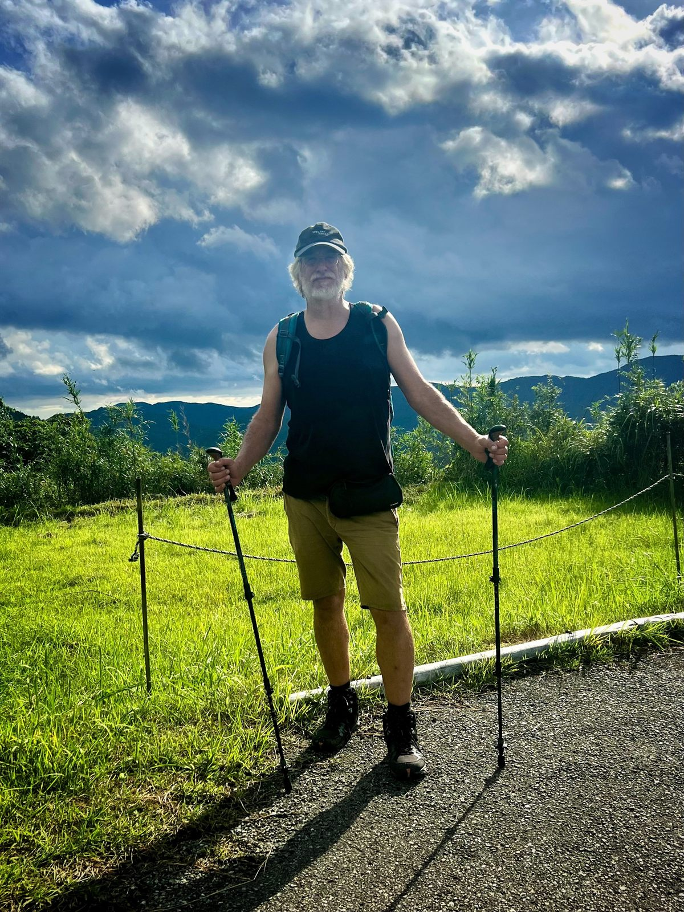
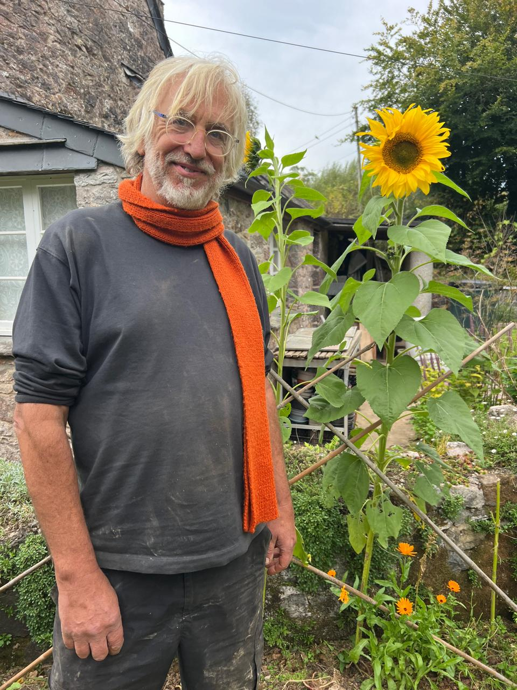

Heartful, creative, and grounded support for change and connection.
I offer psychotherapy, relationship and family work, group facilitation, workshops, retreats, and coaching. My work is heartful, creative, and grounded in a non-pathological approach that values meaning, connection, and change.
My approach to individual therapy is heartful, direct, and creative. I work with people navigating anxiety, depression, grief, stress, life transitions, identity, and the places where life feels stuck or difficult. I value a non-pathological approach and believe that symptoms, struggles, dreams, and body experiences may carry meaning and point toward deeper gifts, insight, and change. This work can include talking, dreams, body awareness, imagination, movement, and other creative ways of exploring what is happening.

Relationship and couples work offers a space to explore communication, closeness, difference, conflict, and power dynamics between partners or other important people in your life.
My style is warm, direct, and non-judgemental. I value and respect diverse expressions of relationship, gender, and sexuality, and aim to create a space where people can bring their full selves with honesty and safety. This work can help people understand recurring patterns, speak more openly, and find new ways of relating that support both connection and individuality.
The parent-child relationship is deeply important, and family life can be both nourishing and challenging. I offer a supportive space for parents, children, and families to explore what is happening with care and without blame. Drawing on my background in NHS services around adoption and children in care, many years working in residential care, and my experience as an adoptive parent, I bring particular understanding to the complexities and joys of family life. I do not currently work with children under 16 years of age.

I offer groupwork, workshops, and retreats for people who want to learn and explore in a shared setting. This can include Processwork, Dreambody work, conflict facilitation, innerwork, and creative approaches to personal and collective change.
Please visit my Events page for upcoming groups, workshops, and retreats. If you have a particular organisation or group setting in mind, you are also welcome to contact me to discuss arranging a tailored group or workshop.
I offer coaching and leadership development for people looking to grow in confidence, clarity, and capacity. This work can support leadership at personal, relational, or organisational levels, especially where there is complexity, responsibility, or change. I bring experience as a Founding Director of the Apricot Centre CIC, alongside my wider clinical, facilitation, and community-based work.
My approach combines awareness, reflection, and practical support, and can be useful for people who want to lead with more presence, integrity, and ease.